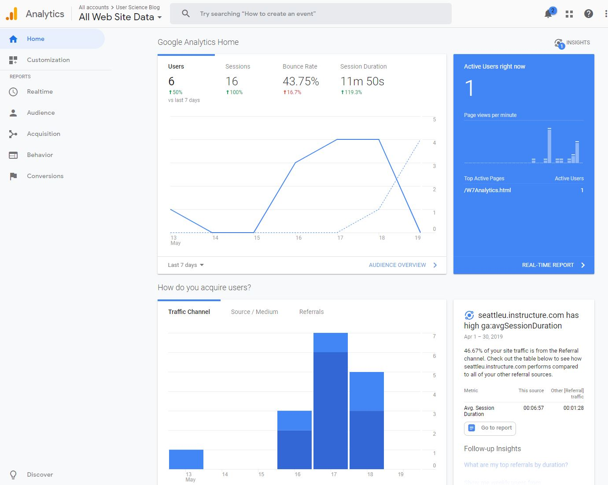
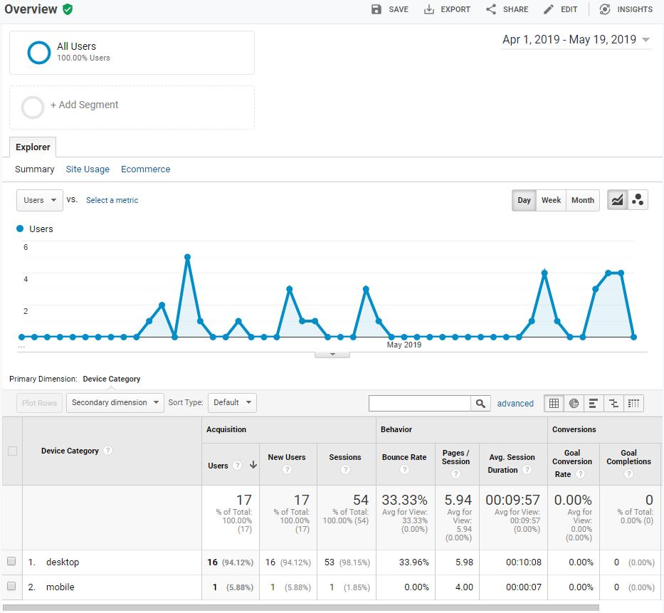
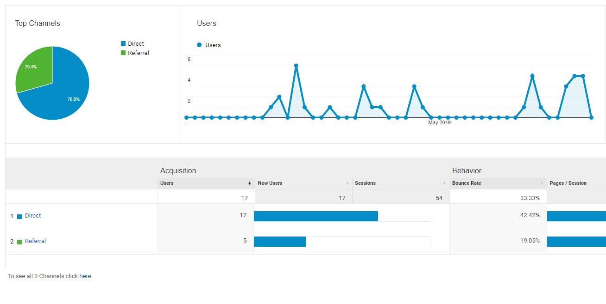

Big Brother Analytics
Today we have a wealth of information online, some that we want as well as some we provide. Whenever we create a new online account, visit a website, click an ad, or buy something online we are tracked. Not that we are being stalked or intruded upon but rather studied as a data point on a graph. The vast majority of businesses online will use some sort of analytics tracking to learn more about their customers as otherwise it’s hard for them to tell how well they are doing. This is legally never about us as individuals but rather about the entirety of people visiting a website and what categories they fall into. In fact I have been tracking data on this very site with Google analytics, the most commonly used data tool online.
I want to share with you exactly what this Big Data world is about by being transparent with the process. Google analytics gathers a lot
about what type of users visit which pages and in what manner. These are measured in a number of marketing and data terms like pageviews,
conversions, goals, bounce rate, and more. I’m going to make a few guesses about what the data looks like so we can compare it with the
reality.
Let’s say that:
- Most of my visitors are between 25 and 45 with a strong male majority
- Almost all visitors are reaching my site through github
- I will have an article with a high number of pageviews from a direct link, likely from being featured in class
- Most users will not explore beyond the page they were linked to (high bounce rate)
- Almost all of my visitors will be on a desktop with Google Chrome
Lets pour over the data and see if I was right! While we do so I’d like to explain a bit about what each metric is in an attempt to demystify the big data.
What Does the Chart Say?
I was right about how my visitors reached the site though. With 53 out of 54 users navigating to my site via desktop I can confidently say that I’m the only person who has used the site on mobile. The most popular browser was indeed chrome but I was a bit surprised to see that about a third used safari.
This may surprise you but Google Analytics defaults to not enabling any demographics data collection. This means that it knows people are visiting the site but not who they are. Unfortunately I did not enable demographics data in time to gather any meaningful data. As to what predefined marketing category my visitors fall into will have to remain a mystery for now.
I did have a very popular page, Week 2’s article about boats had a total of 49 pageviews! That is actually more views than the home page! A Pageview is simply the number of times a page is viewed including repeats. However, even though the number of unique visitors was the highest it was well within normal limits. I probably inflated the numbers while working on it which would explain my other abnormally high counts. 70% of my visitors were direct links which just about confirms that I’m my own biggest fan!
Github was my biggest referral site quickly followed by seattle universities canvas page. The majority of connections were direct though so it was a very limited sample.
The bounce rate is how often a user only visits one page and leaves immediately. This usually means that the visitor didn’t find what they were looking for and is generally a bad thing. My site had an abnormally low one of 33%! That combined with an average session time of 10 minutes means that most people are reading my work.
This was of course a quick look at a small sample size but we did cover most of what Google Analytics can do. I had some good guesses and some bad ones which is important. Hard data tends to shed light on any biases we may have in our own work. I think that every online business should try their best to gather data on their users now that I have experienced it. It also is surprisingly non intrusive for the individual as I never knew exactly who was who in my results. If you want to try it yourself go ahead and create an account, set up a site to track, and add in the small script tag to your pages to start gathering data.